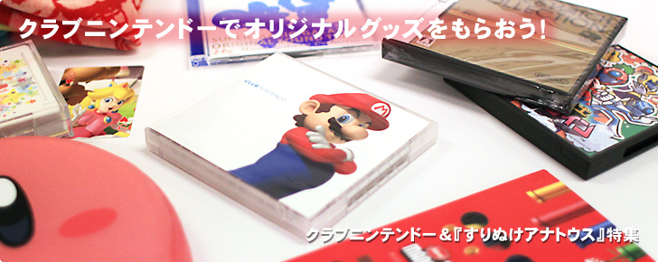
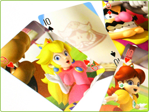
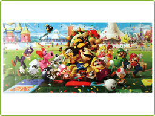
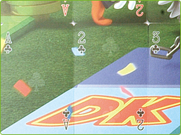
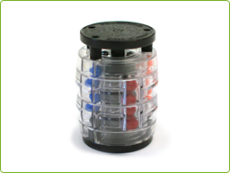
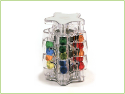
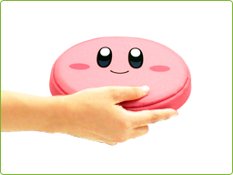
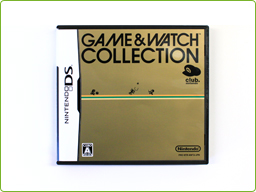
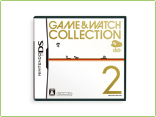

クラブニンテンドーのポイント特典となるオリジナルグッズは、どれもここでしか手に入らない珍しいものばかり。マリオやカービィたちのキャラクターグッズから、ゲームライフをより楽しくしてくれる小物まで、実にさまざまなものがあります。
さらに、オリジナルグッズの実物をよく見てみると、ちょっとした部分にも意外なこだわりを発見できます。
さらに、オリジナルグッズの実物をよく見てみると、ちょっとした部分にも意外なこだわりを発見できます。
任天堂は、1902年に日本で初めてトランプを製造したメーカーでもあります。
100年以上の歴史を持つ任天堂のトランプには数多くの絵柄があり、マリオシリーズのものだけでもたくさんの種類があります。
その中には、クラブニンテンドーでしか手に入らないオリジナルのトランプもあります。
100年以上の歴史を持つ任天堂のトランプには数多くの絵柄があり、マリオシリーズのものだけでもたくさんの種類があります。
その中には、クラブニンテンドーでしか手に入らないオリジナルのトランプもあります。

こちらの「マリオパーティトランプ」は、大きなマリオパーティのイラストを、ジョーカー2枚を除いた52枚のカードで分割した絵柄になっています。
このトランプを「7ならべ」に使えば、本来の手札を早く使い切るための戦略や駆け引きの楽しさに加えて、みんなでひとつの絵を完成させる楽しさも味わえるというわけです（※）。また、通常のトランプだけでなく、大きなパズルとして楽しむこともできます。
※「7ならべ」の遊び方シートもついています。
このトランプを「7ならべ」に使えば、本来の手札を早く使い切るための戦略や駆け引きの楽しさに加えて、みんなでひとつの絵を完成させる楽しさも味わえるというわけです（※）。また、通常のトランプだけでなく、大きなパズルとして楽しむこともできます。
※「7ならべ」の遊び方シートもついています。

全部ならべてみると、額に入れて壁にかけたくなるほど、実に壮観です。
このトランプには透明の浮き彫り（エンボス）加工が施されていて、スペード・ハート・クラブ・ダイヤの絵柄がわかるようになっています。写真では少し伝わりにくいかもしれませんが、高級感が漂う素敵な仕上がりです。
このトランプには透明の浮き彫り（エンボス）加工が施されていて、スペード・ハート・クラブ・ダイヤの絵柄がわかるようになっています。写真では少し伝わりにくいかもしれませんが、高級感が漂う素敵な仕上がりです。

今からちょうど30年前の1980年、任天堂から「テンビリオン」という立体パズルが発売されました。これは、透明なプラスチックのドラムが4つ重なった形になっていて、フランジャーと呼ばれる出っ張りの部分を上下させながら、2つのドラムを回転させることで、中に入っている5色の球の色を縦にそろえるというルールでした。

クラブニンテンドーでもらえる「スターテンビリオン」は、その「テンビリオン」のリメイク品です。ルールや操作方法はまったく同じですが、円筒型から星型になり持ちやすく、中の球の色もより透明で見やすくなっています。
「テンビリオン」を遊んだことがある方にとっては懐かしく、また、初めての方にとっても気軽に永く楽しめるパズルです。
「テンビリオン」を遊んだことがある方にとっては懐かしく、また、初めての方にとっても気軽に永く楽しめるパズルです。

カービィの顔をあしらった、きれいなピンクのフライングディスクです。ナイロンの布とスポンジでできています。とても軽く、ほどよくやわらかいため、小さなお子さまとも一緒に、家族みんなで安心して遊ぶことができます。

1980年代初期に一世を風靡した懐かしいゲーム＆ウオッチが、ニンテンドーDS用ソフトになりました！
『ゲーム＆ウオッチコレクション』には、1982年発売のマルチスクリーンシリーズから『ドンキーコング』『オイルパニック』『グリーンハウス』の3本を収録しています。時刻の表示やアラーム機能も、しっかりと再現されています。
『ゲーム＆ウオッチコレクション』には、1982年発売のマルチスクリーンシリーズから『ドンキーコング』『オイルパニック』『グリーンハウス』の3本を収録しています。時刻の表示やアラーム機能も、しっかりと再現されています。

『ゲーム＆ウオッチコレクション2』には、1981年発売のワイドスクリーンシリーズから『パラシュート』と『オクトパス』の2本と、さらに海を舞台としているこの2つのゲームを合体させたオリジナルのゲーム『パラシュート×オクトパス』の3本を楽しむことができます。
